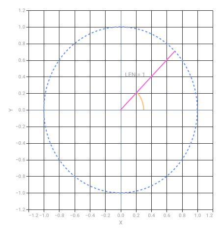
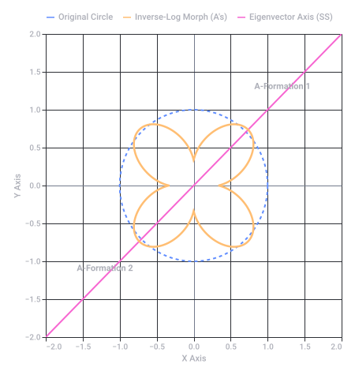
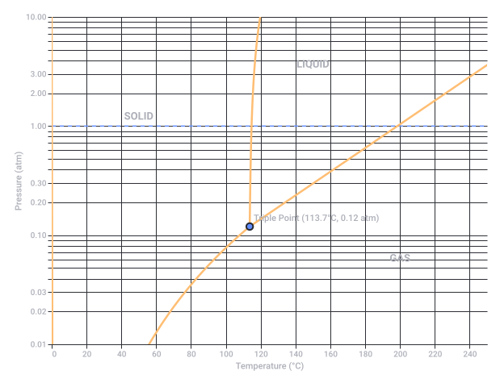
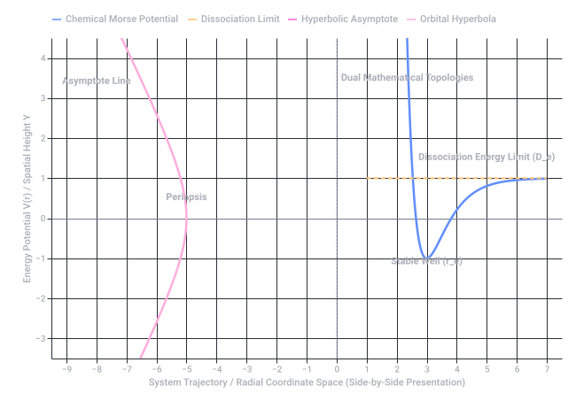
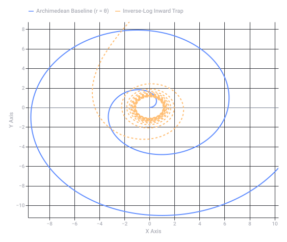

Vrije Radicalen Berekening
1. Logische Operators (Boolean Algebra)
- EN (AND-operator): Dit is de logische conjunctie ().
- Als we "IKCAL" en "Vrije Radicalen" als twee beweringen of sets ( en ) zien, dan activeert "EN" de doorsnede:
2. Numerieke Waarden (Alfabetische Positie)
- I = 9
- K = 11
- C = 3
- A = 1
- L = 12
- E = 5
- N = 14
3. De Wiskundige Operaties Uitgepakt (Unpacked)
| Stap | Letter | Waarde | Operatie / Effect | Cumulatieve Som |
|---|---|---|---|---|
| 1 | I | 9 | Startwaarde (Basis) | 9 |
| 2 | K | 11 | Optelling () | 20 |
| 3 | C | 3 | Aftrekking ( of vermenigvuldiging) | 17 |
| 4 | A | 1 | Neutraal element van vermenigvuldiging () | 17 |
| 5 | L | 12 | Optelling () | 29 |
| 6 | E | 5 | Optelling () | 34 |
| 7 | N | 14 | Optelling () | 48 |
De totale algebraïsche vergelijking van de string:
4. De Woordspeling (Chemische Wiskunde)
- Vrije Radicaal = Stabiel Molecuul 1 elektron ()
- Antioxidant = Voegt 1 elektron toe ( )
1. KCAL (Kilocalorie) De Energie- en Arbeidsvergelijking
- Wiskundige omrekening: (of ).
- De operatie: Vermenigvuldiging met de constante om over te stappen van thermische energie naar mechanische SI-eenheden.
2. LEN (Length / Lengte) De Meetkundige Afstandsformule
LEN of length() de functie die de grootte van een vector of de lengte van een string berekent. - De operatie: De Euclidische norm (afstandsformule) in een -dimensionale ruimte. Voor een vector tussen twee punten gebruikt LEN de worteltrekking uit de som van kwadraten:
3. RAD (Radiaal) Trigonometrische Hoektransformatie
RAD staat voor radialen, de standaard wiskundige eenheid voor het meten van hoeken gebaseerd op de booglengte van een eenheidscirkel. - De operatie: Een lineaire transformatie (schaling) van graden naar radialen via de constante .
- Dit triggert direct de goniometrische basisfuncties zoals en , die radialen als input vereisen.
4. VRIJ (Vrijheidsgraden / Degrees of Freedom) Statistische Combinatieleer
- De operatie: Aftrekking (). Als je een steekproef hebt van grootte en je hebt parameters restricties (zoals het gemiddelde), dan is de operatie:
5. "en" De Logische Conjunctie (Boolean Algebra)
Visuele Samenhang van de Operaties
LEN roteert over een hoek RAD om mechanische arbeid KCAL te verrichten binnen een bepaald aantal statistische dimensies VRIJ), kunnen we de relatie tussen de hoek (in radialen) en de meetkundige coördinaten als volgt visualiseren op de eenheidscirkel: 
Recorded diagram labels and controls: Unit Circle Geometry: RAD & LEN −1.2 −1.0 −0.8 −0.6 −0.4 −0.2 0.0 0.2 0.4 0.6 0.8 1.0 1.2 X −1.2 −1.0 −0.8 −0.6 −0.4 −0.2 0.0 0.2 0.4 0.6 0.8 1.0 1.2 Y LEN = 1 RAD = π/4 (45°)
The Mathematical Transformation (2D Space)
- The Eigenvector Angle:
- Angular Distance to Axis:
- Inverse-Log Dynamic Radius:
Visualization of the Transformation
Dimensional Expansion (ND Space)
- The circle becomes a hypersphere .
- The single eigenvector axis SS generalizes to a 1D line or a multi-dimensional eigenspace projection.
- The inverse-log scaling function acts on the geodesic distance (angular separation φ) on the hypersphere surface relative to that specific hyper-eigenspace hyperplane, collapsing the hypersphere into twin multi-dimensional hyper-A shells.

Recorded diagram labels and controls: Geometric Transformation & Morph Topology −2.0 −1.5 −1.0 −0.5 0.0 0.5 1.0 1.5 2.0 X Axis −2.0 −1.0 0.0 1.0 2.0 −1.5 −0.5 0.5 1.5 Y Axis A-Formation 1 A-Formation 2 Original Circle Inverse-Log Morph (A's) Eigenvector Axis (SS)
1. ND (N-Dimensional Matrix Space)
- The Concept: Represents an arbitrary N-dimensional vector space ().
- The Operation: This establishes the tensor rank or the number of independent orthogonal axes available for the transformation. In the context of your previous prompt, this dictates how many dimensions the eigenvector axis system spans.
2. io (Input / Output / Mapping Function)
- The Operation: A transfer function or mapping operator , defined as:
- If treated as a product of variables (i ⋅ o), where (the imaginary unit), it injects a complex number rotation of 90° ( radians) into the matrix profile.
3. DE (Differential Equation / Determinant)
- Differential Equation: An operator involving derivatives with respect to space or time:
- Determinant Extension: In matrix algebra, it can represent the Evaluation of the Determinant () or the Differential Element (dE) used in calculus to calculate the change in total structural energy or area expansion.
4. in (Set Inclusion / Inverse Operator)
- Set Membership (∈): Points or vectors belonging to a specific topological space or domain. For example, the coordinates must fall inside the warped geometry:
- Inverse Notation ( or f⁻¹): Reinforces the inverse logarithmic scaling from your previous step, mapping an internal boundary transformation.
The Combined Algorithmic Statement
ND -> io -> DE -> in, it unpacks into a pipeline for geometric deformation: [ N-Dimensional Space ]
│
▼
[ Input / Output Mapping ] ──► (Applies the Inverse-Log Scaling Function)
│
▼
[ Differential Equation ] ──► (Calculates the rate of deformation/curvature)
│
▼
[ Set Inclusion (in) ] ──► (Filters which data points fall inside the twin 'A' shapes)
[Kr] 4d¹⁰ 5s² 5p⁵, leaving it exactly 1 valence electron short of a stable noble gas configuration. 1. The Chemical Thermodynamics (Phase Diagram)
- Melting Point: 113.7°C (236.7°F)
- Boiling Point: 184.3°C (363.7°F)
2. Connection to Vrije Radicalen (Free Radicals)
- Because iodine lacks exactly one electron in its outer 5p shell, it behaves as a powerful oxidizing agent.
- It actively strips electrons from organic compounds, acting as a highly efficient disinfectant and antiseptic (such as Povidone-Iodine solutions) by tearing through the cell membranes of bacteria and pathogens via radical oxidation pathways.

Recorded diagram labels and controls: Iodine (I₂) Phase Diagram 0 20 40 60 80 100 120 140 160 180 200 220 240 Temperature (°C) 0.01 0.02 0.03 0.10 0.20 0.30 1.00 2.00 3.00 10.00 Pressure (atm) SOLID LIQUID GAS Triple Point (113.7°C, 0.12 atm)
1. Vantablack & Infinite Traps (The Logarithmic Void)
- The Math: Light entering this forest does not simply bounce off; it undergoes repeated internal reflections. Each bounce reduces the light intensity exponentially:
- The Inverse Log Link: To find the depth or number of bounces required to reach total structural darkness, you apply the inverse of exponential decay—a logarithmic scaling. If you scale this boundary inversely, it forms a geometric sinkhole (like an infinite trap) that mimics the complete absorption profile of Vantablack.
2. The F to C Scaling Transform (The Eigenvector Crossing)
3. Merging the Concepts: The Multi-Dimensional Horizon
[ Iodine Gas (184.3°C) ]
│
Inverse-Log Scale (Vantablack Trap)
│
[ Iodine Solid (113.7°C) ]
│
▼
[ Self-Referential Fixed Point: -40° (C = F) ] <── Axis of Symmetry (SS Eigenvector)
1. The Optical Collapse ()
- Vantablack Identity: Vantablack absorbs of incident photons. In a perfect Vantablack system ( absorption), the reflection coefficient drops to absolute zero.
- The Operation: Photons enter the carbon nanotube matrix and their forward velocity vector is entirely trapped, effectively reducing the net exit velocity of light from the system to zero ().
2. Canceling the Speed of Light in
3. The Algebraic Logarithmic Singularity
1. Orbital Mechanics: The Hyperbolic Escape Asymptote
- The Math: The trajectory equation in polar coordinates is:
- The Asymptote: As the distance , the denominator must approach zero. The true orbital trajectory approaches a linear asymptote at the critical true anomaly angle ():
- This asymptote defines the exit vector of the craft. It represents the exact direction the object will travel infinitely into deep space, completely freed from the primary mass gravitational well ().
2. Chemistry: The Dissociation Limit & Potential Wells
- The Math (Morse Potential):
- The Asymptote: As the interatomic distance , the exponential term . This forces the potential energy curve to approach a flat, horizontal asymptote:
- The Fusion: This horizontal asymptote is the chemical dissociation limit. It is the molecular equivalent of escape velocity. Once an electron or atom absorbs enough energy to cross this asymptotic threshold, the chemical bond snaps, turning the system into free radicals.
The Grand Unification Matrix
| Domain | Bound State (Closed System) | The Critical Threshold | Unbound State (Asymptote) |
|---|---|---|---|
| Orbital Mechanics | Elliptical Orbit () | Escape Velocity () | Hyperbolic Asymptote Flight path () |
| Chemistry | Stable Molecular Bond () | Activation/Ionization Energy | Dissociated Free Radical State () |
| Your Matrix () | Trapped Light Space | The Vantablack Singularity () | Infinite Inverse-Log Barrier |

Recorded diagram labels and controls: Asymptotic Topologies: Macroscopic Orbital Hyperbola vs. Microscopic Quantum Morse Potential −9 −8 −7 −6 −5 −4 −3 −2 −1 0 1 2 3 4 5 6 7 System Trajectory / Radial Coordinate Space (Side-by-Side Presentation) −3 −2 −1 0 1 2 3 4 Energy Potential V(r) / Spatial Height Y Periapsis Asymptote Line Stable Well (r_e) Dissociation Energy Limit (D_e) Dual Mathematical Topologies Chemical Morse Potential Dissociation Limit Hyperbolic Asymptote Orbital Hyperbola
1. Geometric Unpacking (The Linear-Rotational Link)
- Direct Scaling: The radius grows at an exact linear ratio with the angle (measured in radial units, RAD).
- Velocity Profile: As a particle moves outward along this spiral, its tangential velocity increases linearly if its angular velocity is constant ().
2. Overturning the Asymptote (From Escape to Confinement)
- No Linear Asymptotes: As , . It sweeps through space infinitely, crossing every radial axis at perfectly equal intervals ().
- Applying the Inverse Log: If we apply your inverse logarithmic scaling to this spiral, we morph the equation into:
- This transformation completely flips the geometry. Instead of spiraling outward to infinity, as , . The trajectory turns into a hyperbolic/logarithmic spiral that acts as an infinite optical sinkhole, spiraling inward and tighter toward the origin—creating the exact particle trap profile of Vantablack.
3. Visualizing the Archetype Evolution
4. Integration into the SS Eigenvector Axis

Recorded diagram labels and controls: Asymptote & Spiral Topology Dynamics −8 −6 −4 −2 0 2 4 6 8 10 X Axis −8 −6 −4 −2 0 2 4 6 8 −10 Y Axis Archimedean Baseline (r = θ) Inverse-Log Inward Trap